Notre Impact en Images
Découvrez les moments de courage et de rédemption que nous vivons chaque jour
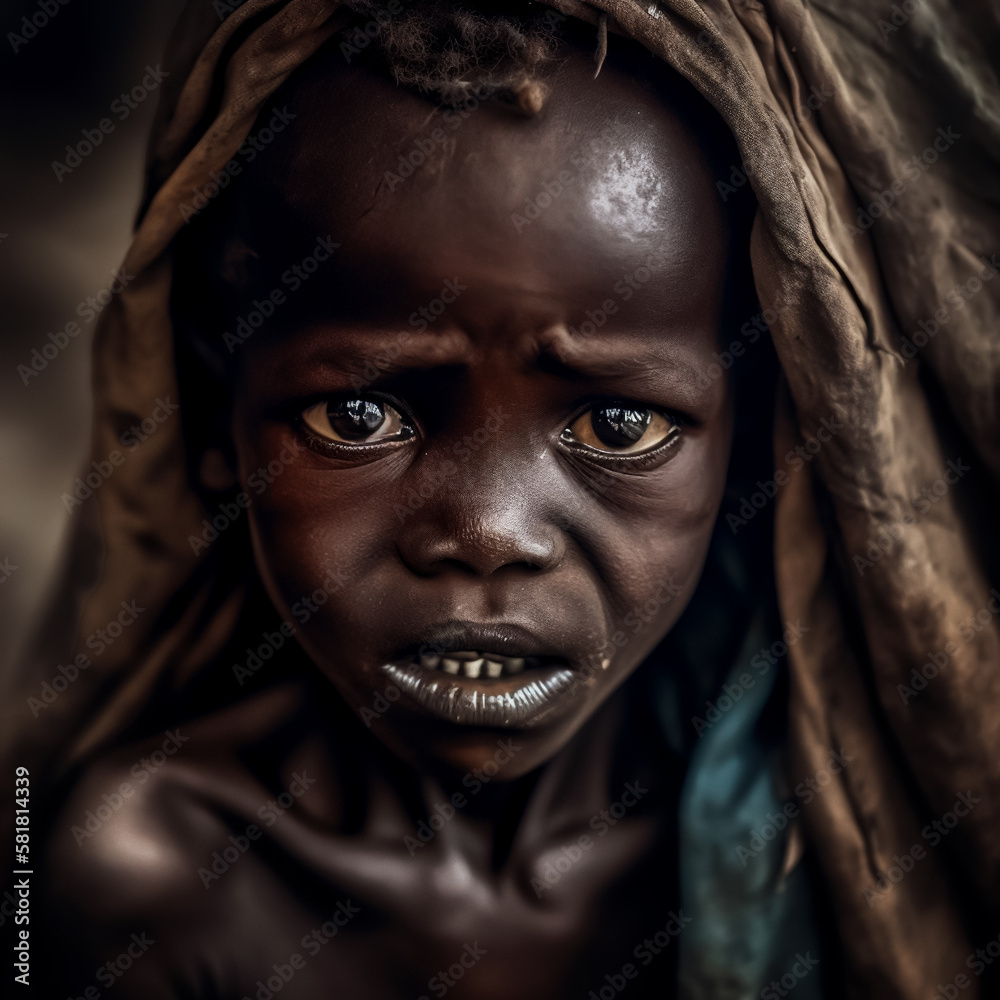
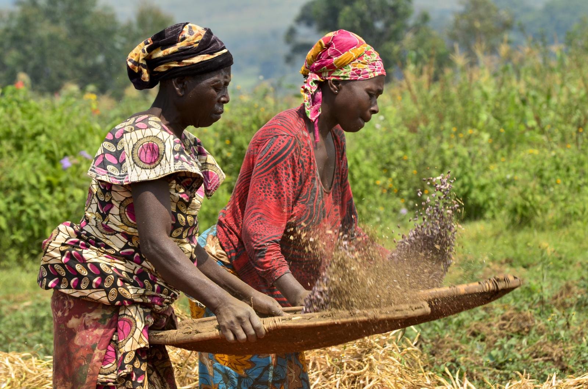


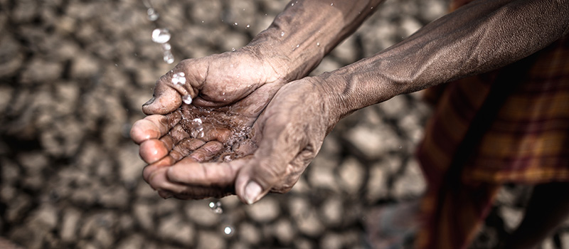
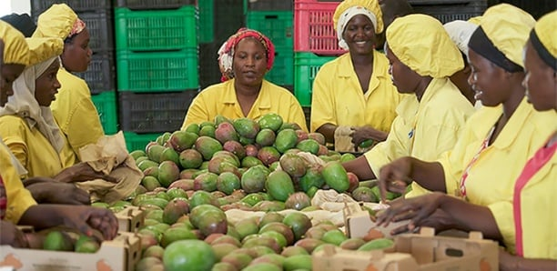


"Survival" dépasse la simple idée de "rester en vie" : il symbolise la résilience, le dépassement des épreuves et le point de départ d'une véritable renaissance
"Parce que survivre à une épreuve ne suffit pas, Survival aide chacun à se reconstruire et à démarrer une nouvelle vie."
Il est toujours possible de trouver un sens à la vie, même dans les moments les plus difficiles.
Chaque année, des milliers de personnes perdent tout suite à des crises, des violences ou des accidents de la vie. Pour eux, la survie est un combat quotidien.
C'est pourquoi, depuis 2025, l'ONG Survival intervient précisément là où tout s'arrête, pour devenir le pont vers leur nouvelle vie. Nous ne distribuons pas seulement de l'aide, nous co-construisons des avenirs.
Que vous soyez un jeune en rupture, une famille déplacée, ou un citoyen ayant tout perdu, nous devenons votre point d'ancrage. Au-delà de l'aide d'urgence, nous vous accompagnons pas à pas pour transformer une situation de pure survie en un véritable nouveau départ.
Découvrez les moments de courage et de rédemption que nous vivons chaque jour




"Il ne suffit pas seulement de donner des vivres et des vêtements ; il faut apprendre à semer et s'entraider dans la récolte."
1. "Il ne suffit pas seulement de donner des vivres et des vêtements..." C'est le constat de départ (pour la majorité des ONG). Pour **SURVIVAL** L'aide matérielle d'urgence (nourriture, habits) est indispensable pour survivre au début, mais elle ne règle pas le problème sur le long terme. Si on s'arrête là, la personne reste dépendante de l'aide extérieure.
2. "...il faut apprendre à semer..." C'est l'étape de la transmission et de la formation. "Semer", c'est donner à ces personnes les compétences, l'éducation ou les outils nécessaires pour qu'elles puissent générer leurs propres ressources. On les apprends à être autonomes pour qu'elles n'aient plus jamais à mendier leur survie..
3. "...et s'entraider dans la récolte..." C'est la partie la plus originale et humaine de ma phrase. Je parles de communauté.La récolte ne se fait pas seul. Cela signifie que dans Mon ONG, les personnes aidées ne sont pas isolées : elles forment un réseau où l'on s'entraide. Mieux encore, cela suggère que ceux qui ont réussi à s'en sortir (ceux qui récoltent) reviennent pour aider les nouveaux à semer à leur tour.
Survival propose une gamme de services conçus pour soutenir tous types de personnes en difficulté.
Un abri et une sécurité immédiate pour vous sentir en sécurité.
Un soutien psychologique professionnel pour vous reconstruire.
Des formations adaptées pour un emploi durable et stable.
Voyagez à travers nos missions humanitaires
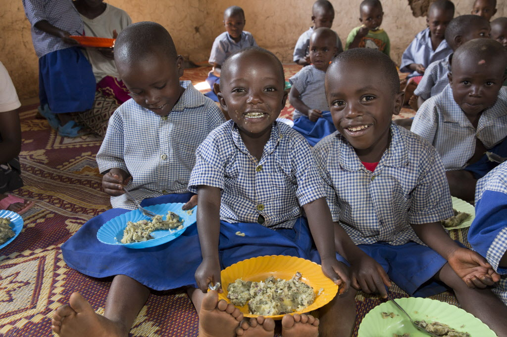
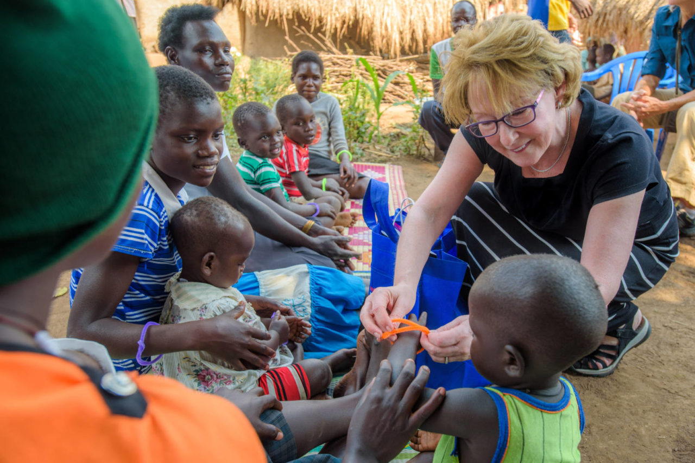
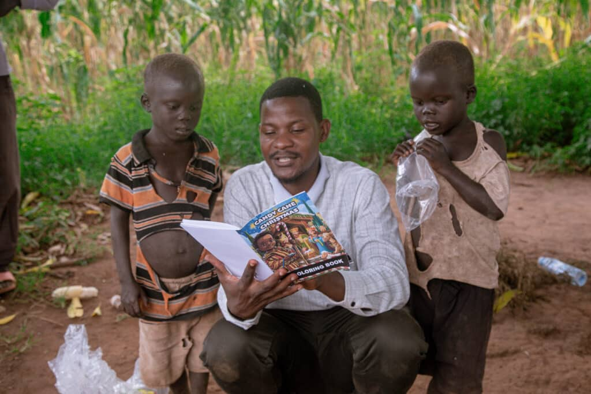
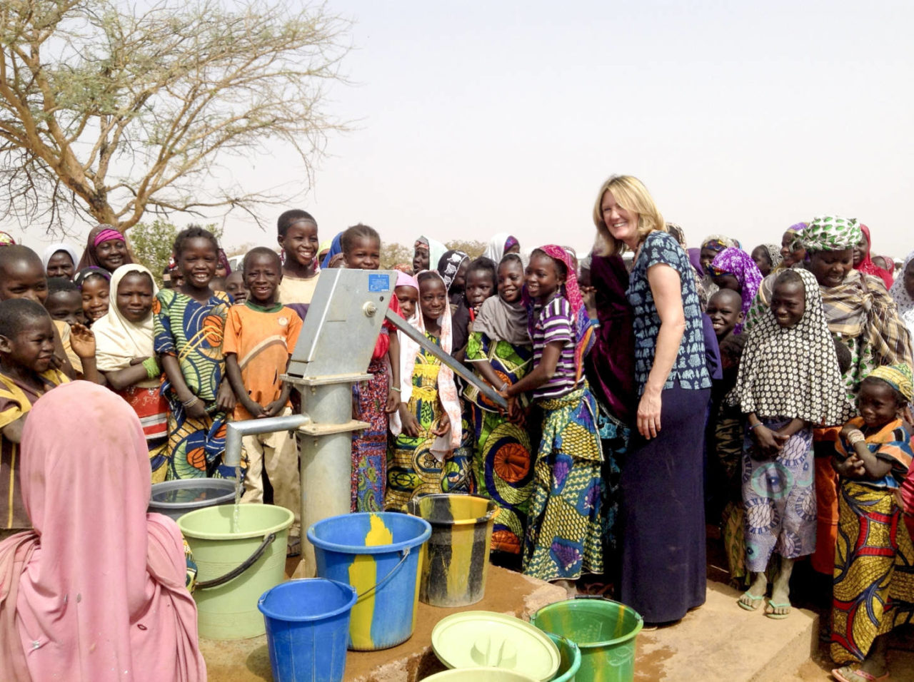

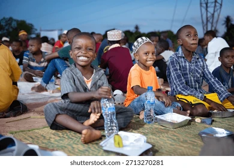
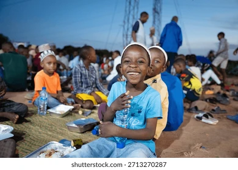
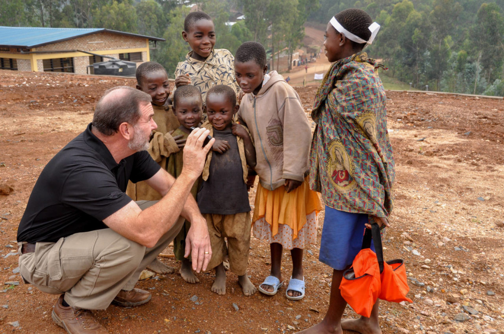
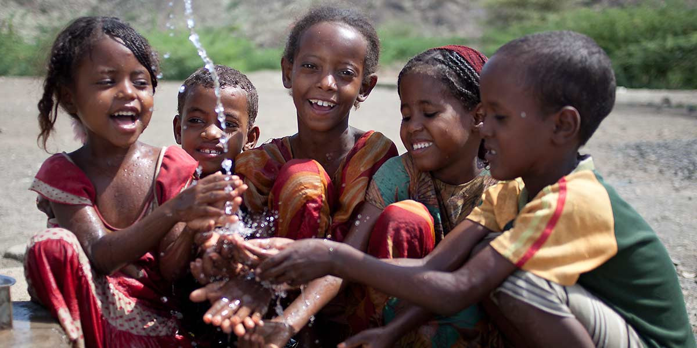
Pour toute question ou pour rejoindre notre cause, n'hésitez pas à nous contacter.